Hermitage Paintings on Foreign Stamps
Several countries, some of them in the not so distant past ideologically connected to the former USSR, have issued stamps reproducing the most renown works originating in the Hermitage paintings collection.
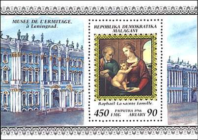
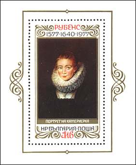
Thanks to the Malagasy souvenir sheet we have the privilege to take a look at the interesting building of Hermitage. On the sheet one can read the earlier name of the city of St. Petersburg, an historical name that was changed by the Soviet state and later restored by the Russian post-communist government.
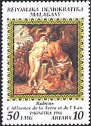
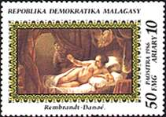
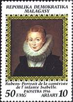
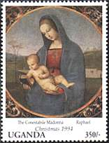
Unfortunately on these stamps are appearing mostly the same paintings that were already shown on the USSR stamp issues; this is understandable, because they are renown, but also a bit annoying because there are still so many other great paintings that could be displayed.
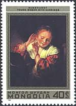
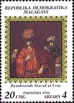
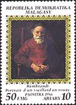
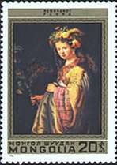
But even so, the stamps are nice and I hope that you will enjoy them. Below there are presented some masterpieces from the Pushkin Museum of Moscow .
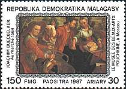
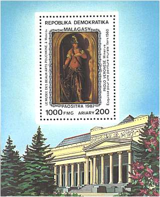
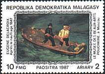
The paintings of the Pushkin Museum originates in the Hermitage painting collection; the paintings were moved in the 20th by the order of the Soviet government to the new capital of the USSR, Moscow.
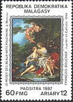
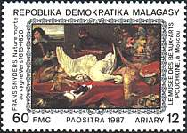
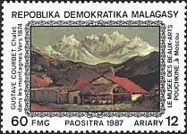
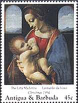
Other Flemish Paintings on this site: Rembrandt , Rubens-1 , Rubens-2 Rubens-1 Rubens-2
Hermitage Museum Hermitage